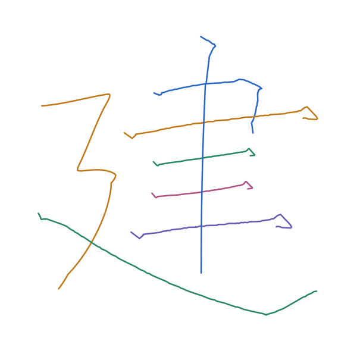

字形参考提供位置、笔顺和布局；下图8笔路径由所选笔画模板适配生成。当前结果是教学写法几何候选。
打开整字 XY，查看或局部修正 → 下载合成配方 下载整字 XY

| 笔顺／写法 | 来源与模板版本 | 整图轮廓内行程 1 px 容差 |
|---|---|---|
| 1. 横折 | hengzhe / standard02ec931cc834580c6cb48e879f070f85f6390c6d42b1a239b11c5199982290b4 | 100.0% |
| 2. 长横 | heng / longa15ac6cf8b548ebbff250b5a9eedabb509cdb451c943c867b48b74321c3b5cec | 100.0% |
| 3. 短横 | heng / short8c9d1e775b42b9ab1954b97bdb7ce80807d5af5de408918f000ee174b4f8c51a | 100.0% |
| 4. 短横 | heng / short8c9d1e775b42b9ab1954b97bdb7ce80807d5af5de408918f000ee174b4f8c51a | 100.0% |
| 5. 长横 | heng / longa15ac6cf8b548ebbff250b5a9eedabb509cdb451c943c867b48b74321c3b5cec | 94.3% 有轮廓外点 |
| 6. 悬针竖 | shu / xuanzhenc73eea3a3083436cd582a11b7ca56827b9291bd6d826ba6f17b85e1bec81d8c2 | 100.0% |
| 7. 横折折撇 | hengzhezhepie / standardc4ad9d72f1d3516b66bd29a804989db17cb779e407a6e20d37597a18432c8e2f | 100.0% |
| 8. 平捺 | na / flata13439699a27bfbdd7b6cd8507e1518126dad906b9cf5897b2272898615cbba4 | 90.9% 有轮廓外点 |
轮廓比例按路径弧长均匀采样计算，使用整图墨迹，不区分交叉位置属于哪一笔。它只检查 XY 与布局参考的叠加，不能评价书法质量或预测墨迹外形。
配方可调整每笔的主体长度、分段长度、宽度尺度、旋转和位移；尺寸调整后重新运行 compose 生成新版本。合成包保存布局与模板快照，可以离线重建。
布局原图仅用于定位和对照。模板尚未对应真实时间、Z 高度或磁响应。